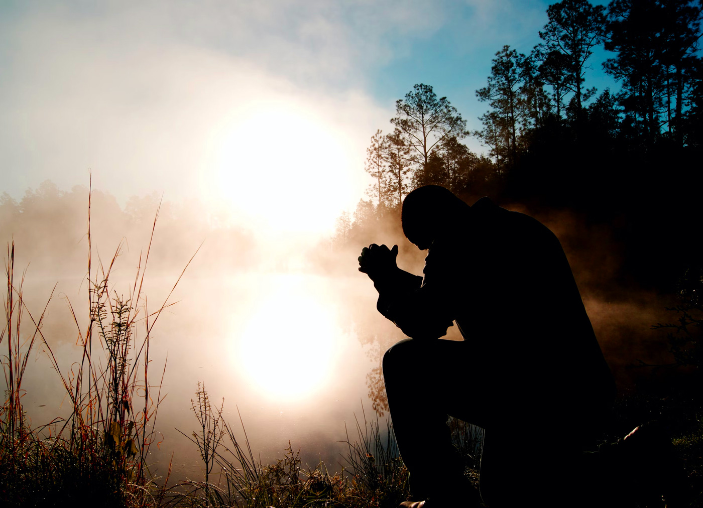

Worship with Us @ Shalom Divine Minisrties Int'i Inc
The Lord is my peace Aka Divine Solution Center
Visit our Church No 12 Shalom Avenue Greenland
Estate Off Badagry express way,
OlorunShogo bus stop
Email us Pastor-cliphinenelson@minister.com
Call us Now 08034084372
ABOUT US
Transforming Live Restoring Hope
02. Goals & Missions
to glorify God by preaching the gospel among all nations,
making disciples and establishing churches of believers who worship God, obey
Christ's commands, and grow to maturity.
A Church that love God and people
Keeping our church running smoothly
Areas all of us struggle to trust God
We are committed to Jesus Christ, the Bible
01. About Our Community
It offers a place for worship, prayer, teaching,
and fellowship, nurturing individuals in their faith journey.
500+ New Volunteer Weekly
$50M+Managed donations

GET INVOLVED NOW
View More About Our Minisrties
Students Ministry
Our Second Students ministry offers JHigh and High School students
representing over 250 schools across the Houston area a fun and
vibrant community in which they find a place to belong, build
lasting relationships and deepen their walks with God. In-depth
discipleship opportunites, worship at LIVE on Wednesday nights
and weekend Bible Study teach students how to live with purpose
and meaning.
Children's Ministry
Second truly loves kids and embraces a
commitment to support families by teaching God’s Word
and maintaining an atmosphere that inspires faith and
growth. Our SecondKids Ministry focuses on guiding children
through each stage of life with fun and intentionality while
preparing parents to cultivate their child’s
growing faith in God.
Youth Ministry
At Second Baptist Church, we are committed to creating community.
The key to connecting is getting involved in a Bible Study class.
Adult Bible Study is the heartbeat of the Second Family and is
what gives our big church a friendly, small town feel. Classes
are designed with our diverse crowd in mind.
Children's Ministry
Second truly loves kids and embraces a
commitment to support families by teaching God’s Word
and maintaining an atmosphere that inspires faith and
growth. Our SecondKids Ministry focuses on guiding children
through each stage of life with fun and intentionality while
preparing parents to cultivate their child’s
growing faith in God.
01. We Preach The Gospel In Every Sermon
We are not preaching the Gospel of a
dead Christ, but of a living Christ who sits exalted
at the Father's right hand, and is living to sav
e all who put their trust in Him. That is why those
of us who really know the Gospel never have any
crucifixes around our churches or in our homes.
The crucifix represents a dead Christ hanging
languid on a cross of shame. But we are not
pointing men to a dead Christ; we are preaching
a living Christ. He lives exalted at God's right
hand, and He "saves to the uttermost all who come
to God by Him."
Henry Allen Ironside
Shalom will direct your gifts to the area of greatest need and impact.
OUR LAST NEWS
The Chouch Life
May 2, 2023
12min
What Will Religion Be Like In 100 Years From Now?
May 2, 2024
10 Grat Example of God Intervention in Gospel
May 2, 2024
3 Easy Steps to Improve our Donation Process
May 2, 2024
The History of Holly Bible Tilled by now days Believers